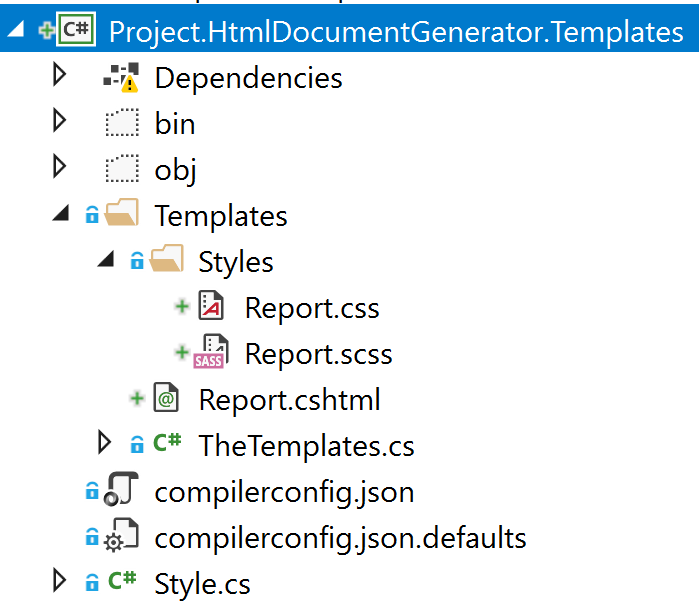

Using Sass with RazorLight
I've been using RazorLight to generate HTML for PDF reports. It works pretty well supporting .NET Standard 2.0.
One of the problems I had was styling these reports. I did not want to just use CSS, I wanted to use Sass.
Transpiling Sass to CSS
I don't have that many reports and they do not change very often. I decided to use Visual Studio extension Web Compiler.
- I did not want to add this to the build pipeline
- I don't mind checking in the CSS files
- I don't mind embedding the CSS files
- I can always change it later. Be pragmatic.
I setup the web compiler to compile on save. I also made the CSS output files an embedded resource.
Project Structure
This is how I structured my project.

I have a Templates folder which contains all the templates (*.cshtml files) and stylesheets under Styles folder (*.css and *.scss files).
TheTemplates.cs is a helper class to make it easy to get a reference to assembly.
Getting the CSS
By using reflection we can read the embedded CSS file as a string.
This returns the CSS wrapped <style> tag for use in the RazorLight template.
Embedding the stylesheet
Finally we can add the stylesheet to our template Report.cshtml using Raw method.